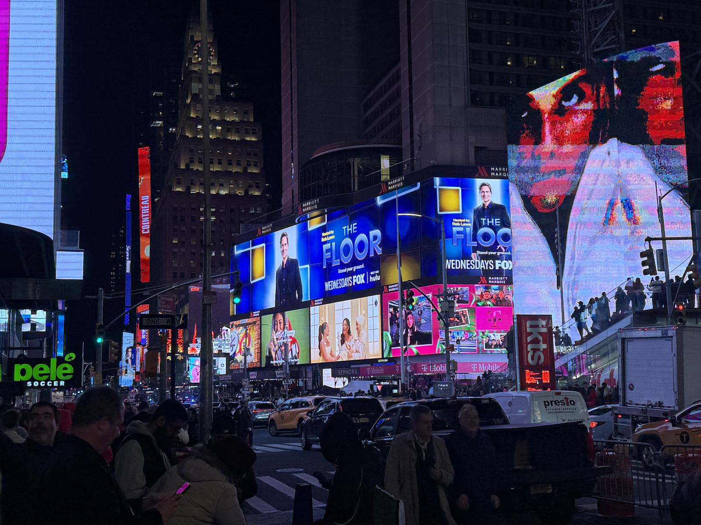
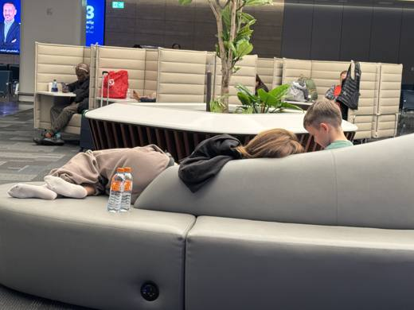
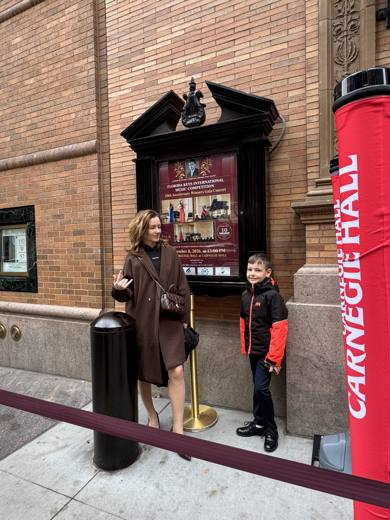
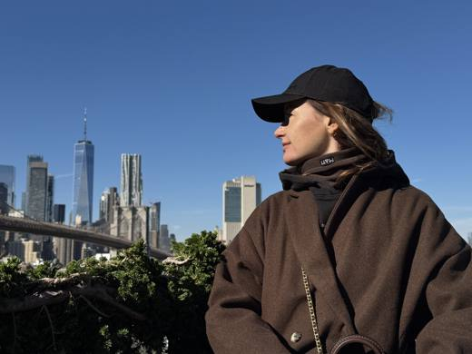
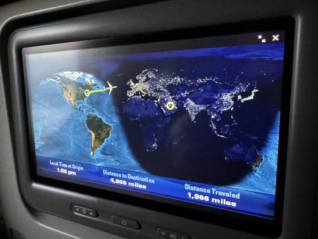

Нью-Йорк, ноябрь 2026
Восемь дней втроём: Наташа, Макар и я. Записано для своих, но заходите все.
В начале ноября мы втроём полетели в Нью-Йорк. Повод был серьёзный: Макар играл на конкурсе в Карнеги-холле. Мы и думали, что вся поездка будет вокруг одного концерта.
Получилось иначе. Концерт был, и Макар занял первое место, но в памяти он стоит в одном ряду с другими вещами. С автобусом в Вашингтон и гидом Дэвидом. С водопадом, ради которого мы двенадцать часов провели в дороге. С метро, в котором мы долго не могли разобраться. С ужином, где официанты поют между столиками. Город оказался больше повода, по которому мы приехали.
Всё это мы записали прежде всего для себя, чтобы через несколько лет открыть и вспомнить. Поэтому здесь настоящие цены, ноябрь 2026 года, и мелочи, которые обычно забываются первыми. Читать можно по дням, как рассказ. А можно по темам: там собрано то, что в рассказ не поместилось.
По дням
Открыть карту →-
0
Дорога: Кипр и Доха
Поездка началась на Кипре, в обычное утро. До Нью-Йорка было почти двое суток и одна пересадка.

-
1
Прилёт, Уолл-стрит и Статуя Свободы
Прилетели рано утром. Заселение в четыре. Значит, сразу гулять.

-
2
Вашингтон за один день
Один день в столице, один хороший гид и одна женщина, которая была на всех наших фотографиях.

-
3
Репетиция, город с высоты и MoMA
Утром пианино, днём город сверху, вечером музей. И кепка.

-
4
Ниагарский водопад
Двенадцать часов в автобусе ради нескольких часов у воды. Оно того стоило.

-
5
Карнеги-холл
День, ради которого всё затевалось.

-
6
Каток, Центральный парк и Grand Central
Спокойный день. После вчерашнего он был нужен.

-
7
Последний день: мост, Кац и «Аладдин»
Последний день. Пытались успеть всё, что ещё не успели.

-
8
Домой
Город попрощался с нами по-своему: сломал метро.
